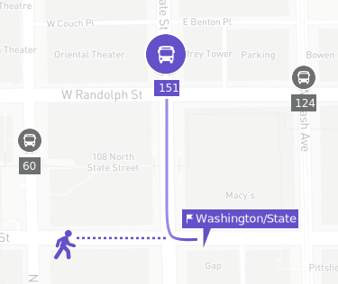

- Line
- Destination
- Frequency
Eastbound
- 60
- Randolph/Harbor Dr
- Every 20m
- 124
- Navy Pier
- Every 10m
Northbound
- 151
- Devon/Clark
- Every 16m
Southbound
- J14
- 103rd/Stony Island
- Every 15m
- 124
- Navy Pier
- Every 10m
Reroute
- 6x
- Jackson Park Express
- N/A
Out of Service
- 4
- Cottage Grove
- Resumes 12:10 am
- 20
- Madison
- Resumes 12:10 am
- 157
- Streeterville/Taylor
- Resumes 6:00 am